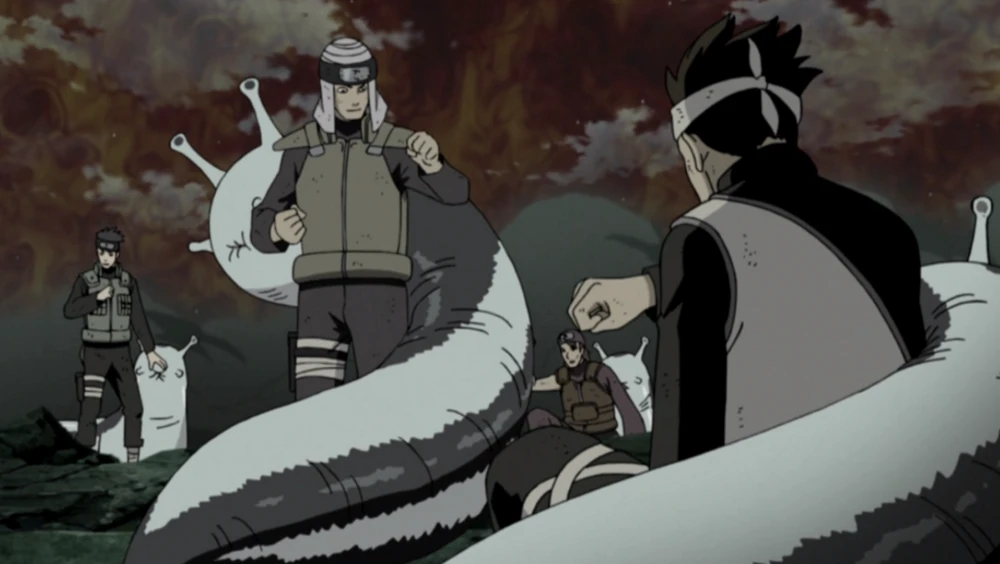
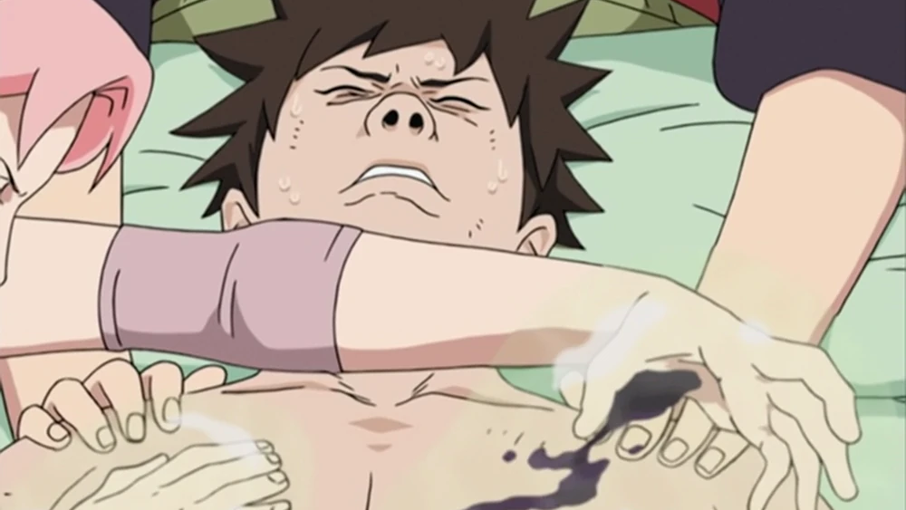

Sakura Uchiha (うちはサクラ, Uchiha Sakura, née Haruno (春野)) is a kunoichi of Konohagakure. When assigned to Team 7, Sakura quickly finds herself ill-prepared for the duties of a shinobi. However, after training under the Sannin Tsunade, she overcomes this, and becomes recognised as one of the greatest medical-nin in the world. After the Fourth Shinobi World War, she joined the Uchiha Clan after marrying Sasuke Uchiha. Later on, she became the Head of the Konoha Medical Department and a medical ninjutsu teacher.
1. Ninjutsu

By the Fourth Shinobi World War, Sakura could use the Summoning Technique, and like Tsunade, summon the giant slug, Katsuyu. Noted to be incredibly impressive by Shizune, Sakura could have Katsuyu split apart and attach itself to others, Sakura could then remotely monitor many allies at once, healing and replenishing their chakra as needed. Sakura could also use Earth, Water, Yin, and Yang Release. By adulthood, she acquired Fire Release as well. Sakura has also become skilled in the use of fūinjutsu. Upon contact, she can skilfully implant a cherry blossom-shaped seal on a target. On command, these seals release red chakra threads that completely restrict body movement.
2. Medical Ninjutsu

The major purpose of Tsunade's training was to teach Sakura medical ninjutsu, which demanded Sakura's refined chakra control and intelligence. Tsunade remarks that her proficiency for healing is exceptionally rare. As such, Sakura can heal even the most fatal of injuries. Even when heavily injured, Sakura demonstrated the ability to quickly heal herself to halt further blood loss, managing to do so with the weapon still lodged within her. When dealing with an enemy with an extremely resistant body, she could combine her chakra-enhanced fists with her medical ninjutsu to heal the resulting damage from her strikes, eventually killing the affected cells from over-replication. By releasing the Strength of a Hundred Seal, Sakura can put her body in a state in which it heals itself so that she doesn't need to stop to treat herself or even be fazed by injury. In the anime, she could perform a highly difficult operation alone to regenerate a missing section of a person's body.
For more information about Sakura Haruno:
Click Here